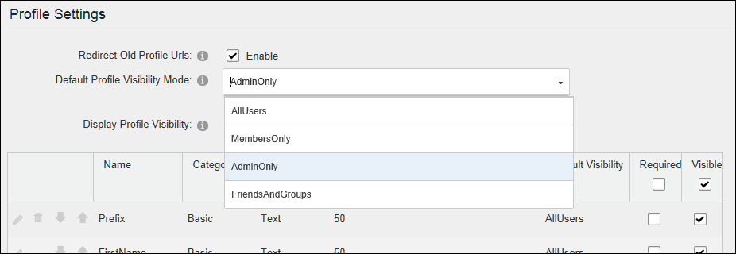

Configuring Profile Settings
How to configure the default settings that apply to all user profile fields on this site. These defaults can be overridden for each field. See "Managing a Profile Field"
- Navigate to Admin >
 Site Settings.
Site Settings.
- Select the User Account Settings tab.
- Expand the Profile Settings section.
- Optional. At Redirect Old Profile URL's, to redirect old profile URL's to the new custom profile URL's. This is the default setting. E.g. This would redirect an old URL such as http://domain.com/activityfeed/tabid/45/userID/4/default.aspx to the custom profile URL created by the user such as http://domain.com/james.
- At Default Profile Visibility Mode, select the default visibility for profile fields:
- AllUsers: Fields will be visible to all users.
- MembersOnly: Fields will be visible to authenticated users only.
- AdminOnly: Fields will only be visible to Administrators and SuperUsers. This is the default setting.
- FriendsAndGroups: Fields will only be visible to friends of the user and members of any groups the user has joined.
- At Display Profile Visibility, to allow users to modify the visibility of their profile fields by displaying the Visibility control to them on their user profile page. This is the default setting - OR - to prevent them from modifying the visibility of profile fields by removing the Visibility control.

-
Click the Update button.
Related Topics:
-
See "Managing your User Profile"